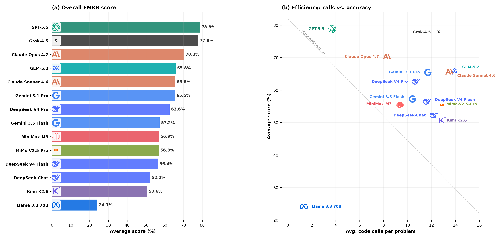
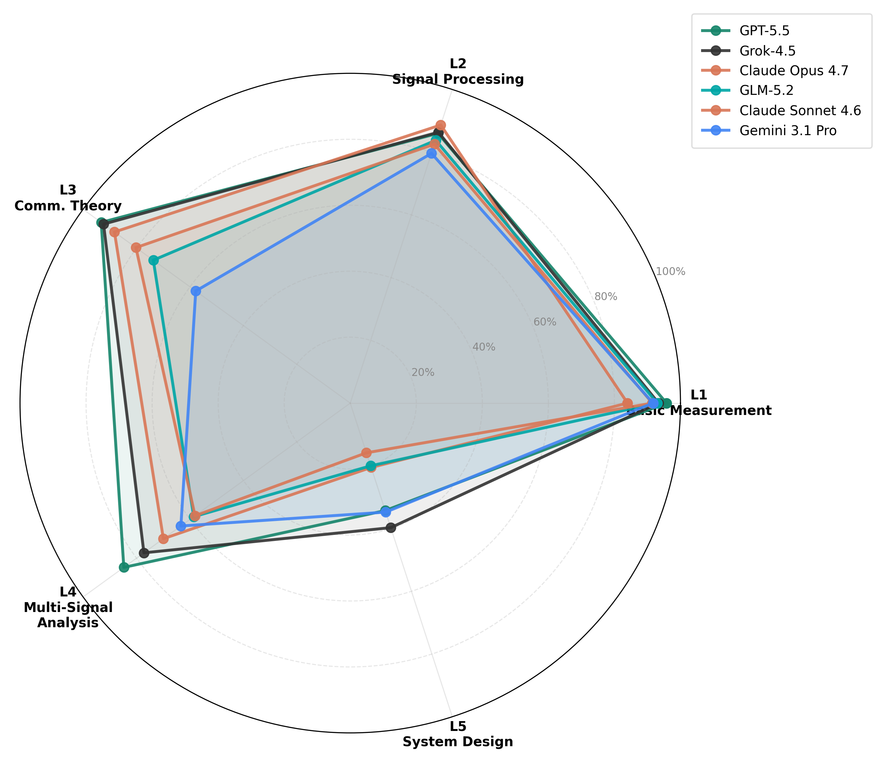
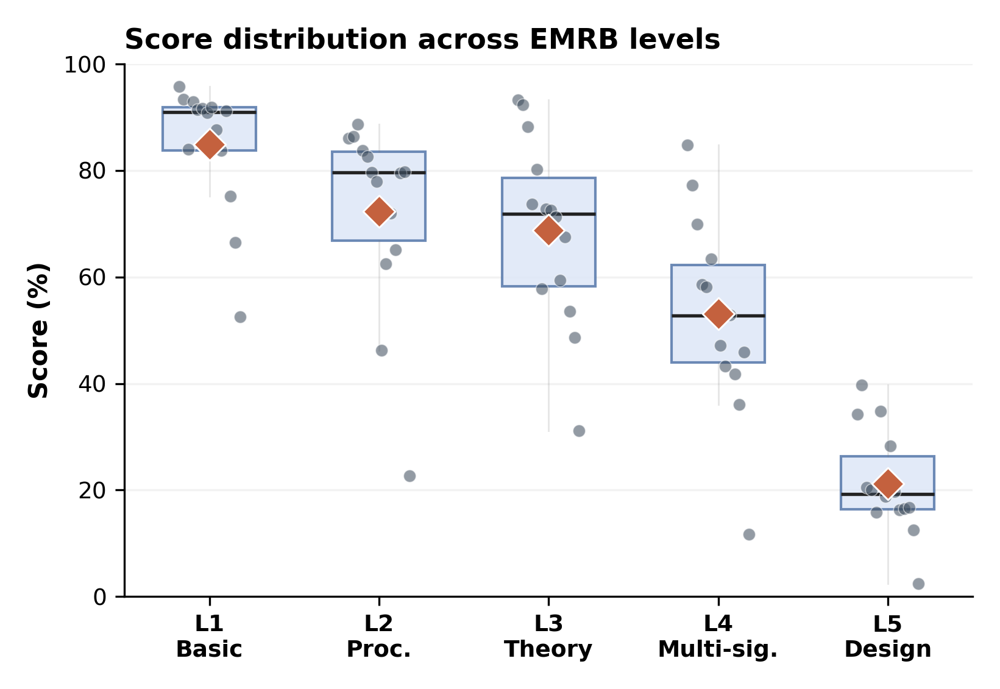
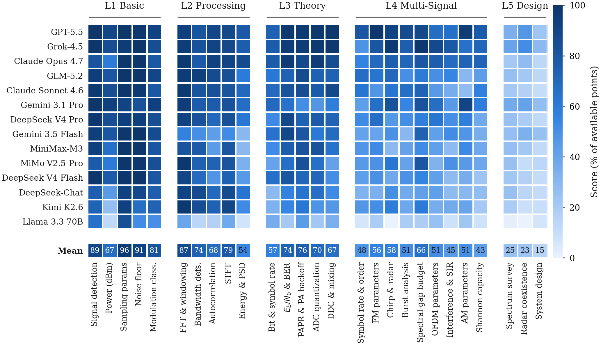
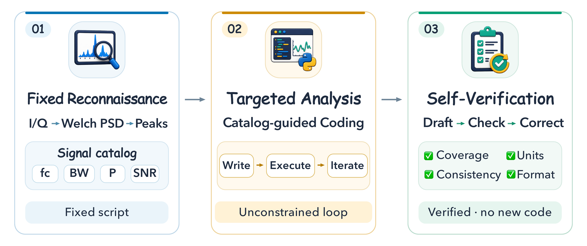
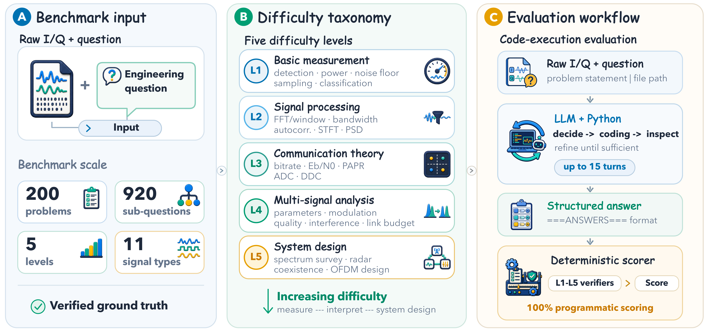

大语言模型电磁信号分析能力榜单
14 个模型的总体得分从 24.1 分到 78.9 分，跨度 54.8 分，没有任何模型达到 80 分，基准对当前最强系统而言仍未饱和。 跨模型平均分从 L1 的 84.9% 依次下降到 L2 的 72.3%、L3 的 68.7%、L4 的 53.1%、L5 的 21.2%。 表格默认按总体得分降序排列，点击任意表头可按该列重新排序，单元格颜色按得分率深浅编码。
数值为该层次或该题型的得分率百分比。总体得分由未取整的分级成绩计算，因此可能与各列取整值的均值在末位存在差异。 L1、L2、L3、L5 的每道题都实例化本等级的全部题型，故每格平均 40 道题；L4 的每道题抽取 5 类题型，故每格平均 5 至 40 道题。
总体表现与效率

能力剖面与题型分布



按题型看，最弱的三类正是 L5 的三类，跨模型均值分别为 25、23、15 分。 L4 中最弱的是香农容量（43 分），而它恰是该等级最标准的教科书公式，说明瓶颈在于从多辐射源场景中提取正确的带宽项与噪声项，而不在计算本身。 L1 中唯一的弱项是 dBm 绝对功率（67 分），其余四类在 81 至 96 分之间，这一弱点向上延续到 L2 的能量与功率谱（54 分）， 可见经过标定的功率测量是最先失效的能力，并且在各个难度等级上持续失效。
这些剖面可以直接翻译为实用边界。最强的模型在工作流的早期阶段已经可靠，标定测量与教科书式链路计算的得分都在 85% 以上。 边界出现在多信号分析：一旦多个辐射源共享频谱，多数模型无法把每一项测量继续绑定在正确的辐射源上。 至于把一次拥挤频段的普查转化为系统设计，目前没有任何模型可以托付，最好成绩只有 39.8%。
结构化分析方法 ReconPilot
ReconPilot 用两个固定阶段包裹住由大模型主导的定向分析：阶段一执行固定的信号侦察，输出一份未定解的频谱区域图而非信号清单； 阶段二是不加修改的自由代码执行回路；阶段三执行自我校验，在提交之前捕捉不一致。 在三个骨干模型上，ReconPilot 分别把总体得分提高 14.0 分、17.6 分与 3.8 分，并在 15 个「骨干 × 层次」组合中改善了 13 个。

| 骨干模型 | 方法 | L1 | L2 | L3 | L4 | L5 | 总体得分 |
|---|---|---|---|---|---|---|---|
| DeepSeek V4 Flash | 自由代码执行 | 91.2 | 65.1 | 67.5 | 41.8 | 16.5 | 56.4 |
| ReconPilot | 88.2 | 86.3 | 84.9 | 67.8 | 24.8 | 70.4 | |
| Gemini 3.5 Flash | 自由代码执行 | 91.9 | 46.3 | 72.6 | 47.2 | 28.3 | 57.2 |
| ReconPilot | 94.9 | 89.2 | 84.3 | 72.2 | 33.1 | 74.8 | |
| GPT-5.5 | 自由代码执行 | 95.8 | 86.0 | 93.2 | 84.8 | 34.5 | 78.9 |
| ReconPilot | 97.0 | 87.7 | 90.1 | 90.5 | 48.2 | 82.7 |
大语言模型电磁信号分析能力评估维度体系
原始 I/Q 采集不带任何结构信息。表格数据的变量由列名给出，代码生成的目标行为由题面给出， 而电磁工程问题所指的辐射源、载频、带宽、干扰关系，在模型把它们计算出来之前并不存在于输入之中，此后每一步结论都会继承这一发现步骤的误差。 结合这一特点，本评测基准系统考察大语言模型在以下五个层次上的表现。
标定精度
选择与论证
系统量的解释
实体绑定
系统设计的综合
测评基准流程

EMRB 测评基准基于程序化生成、参数已知、可独立复现的信号数据集，构建了一套覆盖信号合成、题目生成、代码执行评测与确定性判分的完整流程。 从参数化信号库 → 场景原型与随机种子 → 原始 I/Q 波形与题目 → 沙箱内的多轮代码执行 → 分级确定性验证器 → 五个层次的能力衡量， 形成一个覆盖面广、逻辑严谨、可完全复现的评测框架。
一、程序化合成可验证的原始信号
参数化信号库覆盖 11 种信号类型。每道题由「场景原型 + 随机种子」唯一确定，每级 8 个原型、5 个种子。载频、带宽、功率与信噪比按等级范围采样，叠加经过功率标定的 AWGN，标准答案直接来自生成参数。
二、多层次多维度的题目生成
5 个难度等级、27 类题型、920 个子问题。L1 至 L4 各含 5 个子问题，每个 20 分；L5 含 3 个综合子问题，分值 34、33、33。同一段信号会因问题不同而需要不同的分析过程。
三、代码执行评测与确定性判分
模型收到题面与原始 I/Q 文件路径，在沙箱化的 Python 工具中最多进行 15 轮交互，提交结构化答案。分级确定性验证器按实体绑定与功能性验收规则判分，全过程不含大模型裁判。
数据质量校验
- 独立复现：参考信号处理脚本从保存的文件重新测量全部答案，在 200 道题上与生成参数的一致性优于 1%。
- 实现容差：每段波形确实实现了目标参数，功率误差在 ±0.5 dB 以内，信噪比误差在 ±1 dB 以内，带宽误差在 ±5% 以内。
- 覆盖度：题型分布与信号类型分布均符合设计。
评测题目组成
本评测基准围绕原始 I/Q 波形构建，涵盖五个模型能力评测层次，展开为 27 类互不重叠的题型，形成多层次综合评价体系。 L1、L2、L3、L5 的每道题都实例化本等级的全部题型，L4 的每道题从本等级的 9 类题型中抽取 5 类。 EMRB 的题面本身是英文，模型看到的就是下列原文。
| 等级 | 主题 | 题型 | 辐射源数 | 子问题数 |
|---|---|---|---|---|
| L1 | 基础测量 | 信号检测、功率测量、采样参数、噪声基底、调制识别 | 2–3 | 5 |
| L2 | 信号处理方法论 | FFT 与窗函数、带宽定义、自相关、STFT、能量与功率谱 | 3–4 | 5 |
| L3 | 通信理论 | 比特率与符号率、Eb/N0 与误码率、PAPR、ADC 量化、数字下变频 | 3–4 | 5 |
| L4 | 多信号分析 | 符号率与调制阶数、FM 参数、AM 参数、chirp 与雷达参数、突发分析、频谱空隙链路预算、干扰与 SIR、OFDM 参数、香农容量（每题抽 5 类） | 3–5 | 5 |
| L5 | 系统设计 | 频谱普查、雷达与通信共存、OFDM 系统设计 | 6–7 | 3 |
L1 基础测量的标定精度
Observe the spectrum of this frequency band and answer the following questions: (a) How many distinct independent signals are present in this band? (b) Estimate the center frequency (MHz) of each signal, listed from lowest to highest. (c) Which signal has the strongest power? Which has the weakest? (Identify by center frequency) (d) What is the power difference in dB between the strongest and weakest signals?
Power measurement and dB conversion: (a) Estimate the power (dBm) of each signal. (b) Convert the power of each signal from dBm to mW. (c) Calculate the total power of all signals (dBm). (d) Given a noise floor of −53.0 dBm/20 MHz, calculate the SNR (dB) of each signal within its respective bandwidth.
L2 测量方法的选择与论证
Spectral analysis parameters & windowing: (a) Given fs = 20 MHz and N = 32768, compute the current FFT frequency resolution Δf = fs/N (Hz). (b) Rectangular window vs Hamming window: how does the main lobe width change? How does the sidelobe level change? For multi-signal analysis in this band, which window function is more suitable? Explain your reasoning.
For the QPSK signal at +2.4 MHz (Rs ≈ 250 ksps, roll-off α = 0.3): (a) Estimate its 3 dB bandwidth (Hz). (b) Estimate its 99% power bandwidth (Hz). (c) Estimate its null-to-null bandwidth (Hz). (d) Why do these three bandwidth definitions yield different values? For frequency planning, which definition is most appropriate? Why?
L3 测量到系统量的解释
For the digitally modulated signal at +1.3 MHz: (a) Identify its modulation scheme and estimate the symbol rate Rs (ksps). (b) Calculate the raw bitrate Rb = Rs × log₂(M) (kbps). (c) Calculate the spectral efficiency η = Rb / BW (bps/Hz). (d) If the same symbol rate were used with 64QAM instead, what bitrate (kbps) could be achieved?
(a) Estimate the PAPR (dB) for each signal. (b) If these signals were to pass through the same power amplifier, which signal is best suited for a nonlinear PA? Which is least suited? Why? (c) Assume P1dB = −22 dBm. For the digital signal at +1.3 MHz (average power ≈ −33.3 dBm), calculate whether its peak power exceeds P1dB. (d) Calculate the input back-off (IBO = P1dB − P_avg) (dB) and explain how the back-off affects PA efficiency.
L4 多信号场景的实体绑定
There are two digitally modulated signals in the −0.3 to +2.7 MHz region. Please estimate their symbol rates (ksym/s) and modulation orders respectively, and explain how you distinguished between the two signals.
There is a linear frequency modulated (Chirp) signal in the +5 to +8 MHz range. Please calculate: (a) time-bandwidth product (TBP), (b) processing gain after matched filtering (dB), (c) if this chirp is used for radar ranging, what is the corresponding range resolution in meters?
L5 频谱态势到系统设计的综合
Question 1: Comprehensive Spectrum Situational Awareness and Interference Mitigation (34 pts) (a) Identify all independent signal sources in the band (including possible low-power or burst signals), and provide for each signal: center frequency (MHz), occupied bandwidth (MHz), modulation type, estimated power (dBm). For a burst signal, report its power during the active interval rather than its average over the full recording. Do not miss any signals. (12 pts) (b) Find the pair of non-chirp signals with the largest occupied-band overlap. Calculate their overlap bandwidth (MHz) and SIR (dB), using the weaker signal as the target. (8 pts) (c) Design one contiguous spectral extraction filter ... (14 pts)
确定性评分与分数上限的有效性
建立在真实物理测量之上的基准，其评分必须同时具备精确性与可复现性。EMRB 通过分级的确定性验证器实现这一点，报告分数中没有任何大模型裁判参与。
- 实体绑定：验证器把抽取出的每一个数值先与其子问题标签、物理单位、信号身份完成匹配，然后才施加针对该物理量的容差，因此回答中其他位置出现的无关数字不可能得分。
- 功能性验收：L4 与 L5 的综合答案，例如频谱提取通带、信道排布方案、OFDM 设计参数，按照显式的物理与设计约束验收，而不是与某一个参考字符串比对，从而在保持客观性的同时容纳多种有效设计。
- 前置条件门控：L5 的下游子部分只有在其上游前置条件满足时才得分，例如重叠分析以正确的信号对识别为前提。把一个自信的设计施加于错误的对象，比不作答更糟。
- 版本与溯源指纹：每条结果都随存验证器版本号与任务溯源指纹，只要题目、波形或评分规则发生变化，过期分数在生成图表与聚合结果时会被自动拒绝。
分数上限是可以达到的
| 等级 | 标准答案回放 | 14 模型并集 | 最佳单模型 | 程序化参考解 |
|---|---|---|---|---|
| L1 | 100.0 | 99.8 | 95.8 | 不适用 |
| L2 | 100.0 | 99.4 | 88.7 | 不适用 |
| L3 | 100.0 | 99.6 | 93.2 | 不适用 |
| L4 | 100.0 | 98.8 | 84.8 | 不适用 |
| L5 | 100.0 | 53.2 | 39.8 | 75.7 |
把每道题的参考值按模型被要求的答案格式渲染出来，再用同一套验证器打分，五个等级均得 100.0 分，说明评分规则处处可满足。 对每条判分标准保留 14 个模型中的最好结果，L1 至 L4 的并集覆盖 98.8% 至 99.8% 的可得分数。 L5 另有一份约 1000 行的经典 DSP 参考程序，只读取发布的波形与题面文字，不接触生成参数，得 75.7 分，接近最佳模型 39.8 分的两倍。 需要说明的是，该参考解是程序化的可达性基线，EMRB 目前没有人类专家基线。